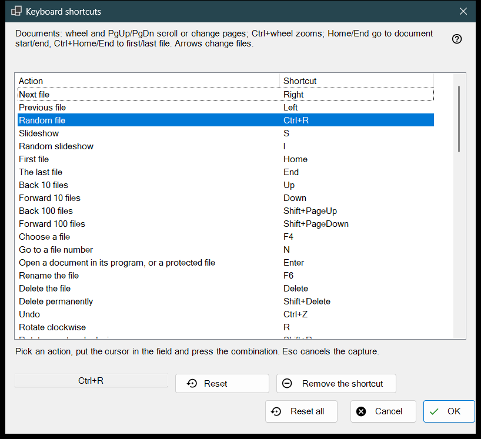
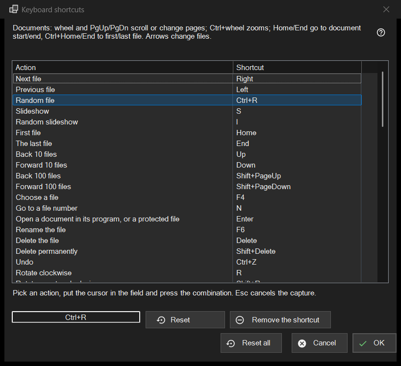

Keyboard shortcuts
What this is for
The list of every viewer action whose key you can change, with the shortcut it answers to now. It opens from Settings, Files and system page, with the Configure.. button on the Keyboard shortcuts row. The window edits a copy: nothing reaches your profile until you press OK.


In this order
- Open Settings, go to Files and system and press Configure.. on the Keyboard shortcuts row.
- Select an action in the list.
- Click the field under the list and press the new combination.
- If another action already owns it, choose Swap shortcuts, Remove it from that action or Cancel.
- Repeat for other actions; use Reset, Remove the shortcut or Reset all where needed.
- Press OK to keep the changes, or Cancel to drop them all.
The elements
The Action and Shortcut list
Each row is one action and its main shortcut; an action with no key shows Not assigned. The ten folder slots appear as Move to folder 1..0 and Copy to folder 1..0 (digit keys move, Shift plus a top-row digit copies). Some actions also answer to extra factory keys (Next file also reacts to Space and PageDown). The list shows only the main one, but as soon as you give the action a new shortcut, all its old factory keys stop working. The text above the list names fixed keys for documents (wheel, PgUp/PgDn, Home/End, arrows) that are not in the list. The action 'Scheduled operations' opens the Scheduled operations window of the Share Manager; it has no key by default, so give it one to open the window from the keyboard.
Recording a combination
Select a row, then click the field below the list (or double-click the row) and press the keys, with Ctrl, Shift or Alt if you want them. The field records the whole combination at once, and a modifier alone is not a combination. Esc leaves the field without recording anything. The change appears in the list straight away, but it is still only in the working copy.
Keys that cannot be assigned
F1, F10, F11, Esc, the Windows keys, the Menu key, Alt+Tab, Alt+F4 and Ctrl+Alt+Delete belong to Windows or to the program. Pressing one shows: This combination is reserved by the system or the program and cannot be assigned. Nothing changes.
A combination that is already taken
The question names the owner: The combination X already belongs to the other action. Swap shortcuts gives that action the shortcut the current one had (possibly none). Remove it from that action leaves it with Not assigned and gives you the combination. Cancel changes nothing.
Reset, Remove the shortcut and Reset all
Reset returns the selected action to its factory key. Remove the shortcut leaves the action with no key at all, so its factory key stops working too; use it to switch a key off. Reset all asks: Reset every shortcut to its default? Reset to defaults clears all your changes in the window; Cancel keeps them.
OK and Cancel
OK saves the whole map into the profile and the viewer uses it at once. Cancel closes the window and leaves the profile exactly as it was. Keys for video and audio (pause, mute, volume, seeking, speed, frame step, tracks) act on the media that is playing.